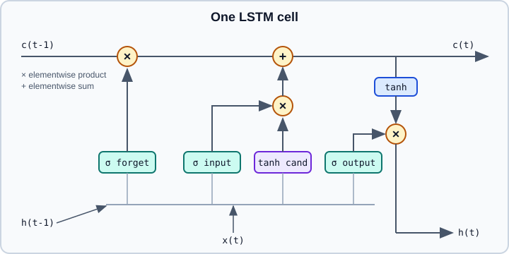

RNNs, LSTMs & GRUs
|
This content was generated with the assistance of AI and should be verified against the official documentation before being relied on in production. |
A recurrent neural network (RNN) processes a sequence one element at a time while carrying a hidden state from step to step. The state is a learned summary of everything seen so far, so the same small set of weights can read sequences of any length: text, audio frames, sensor readings, time series. This page explains the recurrent cell, how gradients flow through time, why plain RNNs struggle and how LSTM and GRU gates repair that, the practical details (padding, masking, bidirectional and stacked layers), the encoder-decoder pattern with teacher forcing and beam search, and why attention-based models took over most of these tasks.
The examples target Python 3.13, PyTorch 2.15 and Keras 3.15 (TensorFlow 2.21 backend). Examples were run on Python 3.13 with PyTorch 2.15 (CPU) and Keras 3.15 on TensorFlow 2.21 on 2026-11-01. Convolution, the other classic sequence-capable layer, is covered in Convolutional Neural Networks. The next page, Attention & Transformers, continues where this one ends. The training mechanics (loss, backward pass, optimisers) are in Backpropagation & Automatic Differentiation and Training Deep Networks.
Sequence problems
Sequence tasks differ in the shape of input and output:
| Pattern | Example | Typical architecture |
|---|---|---|
Many to one |
Sentiment of a review, anomaly flag for a sensor window |
Recurrent layer, then the last hidden state (or a pooled state) into a classifier |
One to many |
Image captioning from an image embedding |
Decoder that feeds its own output back in |
Many to many, aligned |
Part-of-speech tagging, frame-by-frame audio labels |
Recurrent layer, then a per-step output layer |
Many to many, unaligned |
Translation, summarisation |
Encoder-decoder (seq2seq), nowadays usually a transformer |
Forecasting |
Next value or next 24 values of a series |
Many to one, or a decoder over the horizon |
Text must first become numbers: tokens are mapped to integer ids and then to vectors by an embedding layer (see Embeddings & Representation Learning and Tokens & Tokenization).
The recurrent cell
At step \(t\) a vanilla (Elman) RNN combines the current input \(x_t\) with the previous hidden state \(h_{t-1}\):
\[ h_t = \tanh\left(W_{xh}\,x_t + W_{hh}\,h_{t-1} + b\right), \qquad y_t = W_{hy}\,h_t + c \]
The weights \(W_{xh}\), \(W_{hh}\) and \(W_{hy}\) are shared across all steps. The initial state \(h_0\) is normally zeros. Unrolling the loop over a sequence of length \(T\) gives a very deep feed-forward network whose layers share parameters.
All three boxes labelled "cell" are the same weights applied three times.
Backpropagation through time
Training unrolls the network and runs ordinary backpropagation over the unrolled graph; this is backpropagation through time (BPTT). The gradient of the loss at step \(T\) with respect to an earlier state \(h_k\) contains a product of Jacobians:
\[ \frac{\partial h_T}{\partial h_k} = \prod_{t=k+1}^{T} \frac{\partial h_t}{\partial h_{t-1}} = \prod_{t=k+1}^{T} \operatorname{diag}\left(1 - h_t^2\right) W_{hh} \]
If the dominant singular value of \(W_{hh}\) (times the activation slope, at most 1 for tanh) stays below 1, the product shrinks exponentially with \(T-k\): the vanishing gradient problem, which makes it nearly impossible to learn dependencies that span many steps. If it stays above 1, the product grows exponentially: the exploding gradient problem, which shows up as loss spikes or nan.
Remedies, in the order you usually apply them:
-
Clip the gradient norm for exploding gradients (shown below). It does nothing for vanishing gradients.
-
Use gated cells (LSTM, GRU) whose additive state update gives gradients a path that does not pass through a squashing non-linearity at every step.
-
Initialise the recurrent weights orthogonally (PyTorch
nn.init.orthogonal_; Kerasrecurrent_initializer="orthogonal"is already the default). -
Use truncated BPTT for very long sequences: split into chunks of, say, 128 steps, carry the hidden state across chunks but call
.detach()on it so the gradient stops at the chunk boundary. -
Shorten the effective path with attention or residual connections (see the last section).
LSTM
The long short-term memory cell adds a second state, the cell state \(c_t\), that is updated additively and protected by multiplicative gates (each a sigmoid layer outputting values in ((0,1)\)):
\[ \begin{aligned} i_t &= \sigma(W_i [h_{t-1}, x_t] + b_i) & \text{input gate}\\ f_t &= \sigma(W_f [h_{t-1}, x_t] + b_f) & \text{forget gate}\\ o_t &= \sigma(W_o [h_{t-1}, x_t] + b_o) & \text{output gate}\\ \tilde{c}_t &= \tanh(W_c [h_{t-1}, x_t] + b_c) & \text{candidate}\\ c_t &= f_t \odot c_{t-1} + i_t \odot \tilde{c}_t\\ h_t &= o_t \odot \tanh(c_t) \end{aligned} \]
The line \(c_t = f_t \odot c_{t-1} + i_t \odot \tilde{c}_t\) is the key: when the forget gate is near 1 and the input gate near 0, the cell state and its gradient pass through unchanged, so information (and learning signal) can travel across many steps. Practical consequences:
-
A forget-gate bias initialised to 1 (a classic trick) keeps memory open at the start of training. Keras does this by default (
unit_forget_bias=True). PyTorch initialises all biases uniformly and does not set it for you. -
An LSTM has four times the parameters of a vanilla RNN of the same width: for input size \(d\) and hidden size \(n\),
4 * (n * (d + n) + 2n)in PyTorch (two bias vectors) or4 * (n * (d + n) + n)in Keras (one bias vector). -
The state returned is a pair \((h, c)\) in both frameworks.

GRU
The gated recurrent unit merges the cell and hidden states and uses two gates, an update gate \(z_t\) and a reset gate \(r_t\):
\[ \begin{aligned} z_t &= \sigma(W_z [h_{t-1}, x_t])\\ r_t &= \sigma(W_r [h_{t-1}, x_t])\\ \tilde{h}_t &= \tanh(W [r_t \odot h_{t-1}, x_t])\\ h_t &= (1 - z_t) \odot h_{t-1} + z_t \odot \tilde{h}_t \end{aligned} \]
(PyTorch swaps the roles of \(z_t\) and \(1-z_t\) in the last line, which is equivalent up to relabelling; see the nn.GRU documentation for its exact form.) A GRU has three weight blocks instead of four, so it is about 25 percent smaller and a little faster than an LSTM. Neither consistently wins in accuracy; try both on your data if recurrence is the right tool at all.
Choosing a recurrent layer
| Option | What it does | Notes |
|---|---|---|
Vanilla RNN ( |
tanh or ReLU cell |
Rarely useful beyond teaching and very short dependencies |
LSTM ( |
Cell state and three gates |
Default recurrent choice |
GRU ( |
Two gates, one state |
Fewer parameters, similar accuracy |
Bidirectional |
A second pass over the reversed sequence, outputs concatenated |
Only when the whole sequence is available at prediction time (tagging, classification), not for streaming or generation |
Stacked ( |
Output sequence of one layer feeds the next |
2 to 3 layers is typical; add dropout between layers |
Projection ( |
Shrinks \(h_t\) below the cell width |
Reduces parameters for large cells |
Quantities that trip people up:
-
Batch layout. PyTorch recurrent modules default to
(seq_len, batch, features); passbatch_first=Truefor(batch, seq_len, features). Keras is always batch-first. -
Outputs versus final state. PyTorch returns
output(the top layer’s hidden state at every step) and the finalh_n(andc_n) for every layer and direction, shaped(num_layers * num_directions, batch, hidden). Keras returns only the last output unlessreturn_sequences=True;return_state=Trueadds the final states. -
Dropout. PyTorch’s
dropout=argument applies between stacked layers only and is ignored (with a warning) for a single layer. KerasLSTM(dropout=, recurrent_dropout=)drops the inputs and the recurrent connections, but a non-zerorecurrent_dropoutdisables the fast cuDNN kernel. -
Speed. On a GPU both frameworks use fused cuDNN kernels when the layer configuration allows. Python-level loops over a cell (for example
nn.LSTMCellin aforloop) are much slower but needed for custom behaviour. -
Parallelism. A recurrence is inherently sequential: step \(t\) needs step \(t-1\). Training throughput on long sequences is therefore far lower than for attention, which processes all positions at once.
Variable-length sequences: padding, packing and masking
Batches need rectangular tensors, so shorter sequences are padded (usually with id 0). The padded positions must not influence the result.
In PyTorch, pack the batch so the recurrent layer skips the padding:
import torch
from torch import nn
from torch.nn.utils.rnn import pack_padded_sequence, pad_packed_sequence, pad_sequence
torch.manual_seed(0)
# Three sequences of different lengths, each step a 4-dimensional vector.
seqs = [torch.randn(5, 4), torch.randn(3, 4), torch.randn(2, 4)]
lengths = torch.tensor([len(s) for s in seqs]) # must be on the CPU, sorted or enforce_sorted=False
padded = pad_sequence(seqs, batch_first=True) # shape (3, 5, 4), zero padded
lstm = nn.LSTM(input_size=4, hidden_size=8, num_layers=2,
batch_first=True, bidirectional=True, dropout=0.1)
packed = pack_padded_sequence(padded, lengths, batch_first=True, enforce_sorted=False)
packed_out, (h_n, c_n) = lstm(packed)
out, out_lengths = pad_packed_sequence(packed_out, batch_first=True)
print(out.shape) # torch.Size([3, 5, 16]) last dim = 2 directions * hidden_size
print(h_n.shape) # torch.Size([4, 3, 8]) num_layers * num_directions, batch, hidden
# Final hidden state of the top layer, both directions concatenated: (batch, 16)
final = torch.cat([h_n[-2], h_n[-1]], dim=-1)Source: PyTorch: torch.nn.LSTM and pack_padded_sequence
Because the sequences are packed, h_n holds the state at each sequence’s real last step, not at the padded end. Without packing, the state would be taken after the zero padding and the model would learn the padding length.
In Keras, mark the padding with mask_zero=True on the Embedding layer (or a Masking layer for float inputs). The mask propagates automatically to LSTM and GRU layers, which skip masked steps and carry the previous state forward:
import keras
from keras import layers
vocab_size = 10_000
inputs = keras.Input(shape=(None,), dtype="int32") # variable-length token ids, 0 = padding
x = layers.Embedding(vocab_size, 64, mask_zero=True)(inputs)
x = layers.Bidirectional(layers.LSTM(64, return_sequences=True, dropout=0.2))(x)
x = layers.Bidirectional(layers.LSTM(32))(x) # last output only
outputs = layers.Dense(1, activation="sigmoid")(x)
model = keras.Model(inputs, outputs)
model.compile(optimizer=keras.optimizers.Adam(1e-3, clipnorm=1.0),
loss="binary_crossentropy", metrics=["accuracy"])
model.summary()Source: Keras: LSTM layer and Embedding layer
Two Keras details: the mask is lost if a layer in between does not support masking (for example, a plain Lambda or a layer that reshapes the time axis), and the keras.io guides on masking and RNNs that older tutorials link to have moved, so rely on the API reference above. The clipnorm=1.0 argument on the optimiser clips each gradient to a maximum norm of 1.
A PyTorch classifier with gradient clipping
The following complete training step shows a many-to-one text classifier with the loss, clipping and a detach-free setup (each batch starts from a zero state, which is the default when no state is passed):
import torch
from torch import nn
class SequenceClassifier(nn.Module):
def __init__(self, vocab_size: int, embed_dim: int = 64, hidden: int = 128, classes: int = 2):
super().__init__()
self.embed = nn.Embedding(vocab_size, embed_dim, padding_idx=0)
self.rnn = nn.GRU(embed_dim, hidden, num_layers=2, batch_first=True,
bidirectional=True, dropout=0.2)
self.head = nn.Linear(2 * hidden, classes)
def forward(self, tokens: torch.Tensor, lengths: torch.Tensor) -> torch.Tensor:
x = self.embed(tokens)
packed = nn.utils.rnn.pack_padded_sequence(x, lengths.cpu(), batch_first=True,
enforce_sorted=False)
_, h_n = self.rnn(packed) # GRU returns (output, h_n)
h = torch.cat([h_n[-2], h_n[-1]], dim=-1) # top layer, forward and backward
return self.head(h) # logits
model = SequenceClassifier(vocab_size=10_000)
optimizer = torch.optim.AdamW(model.parameters(), lr=1e-3)
loss_fn = nn.CrossEntropyLoss()
def train_step(tokens, lengths, labels):
model.train()
optimizer.zero_grad(set_to_none=True)
loss = loss_fn(model(tokens, lengths), labels)
loss.backward()
nn.utils.clip_grad_norm_(model.parameters(), max_norm=1.0) # guards against exploding gradients
optimizer.step()
return loss.item()Source: PyTorch: torch.nn.GRU, clip_grad_norm_ and PyTorch tutorials
Sequence-to-sequence models
An encoder-decoder (seq2seq) model handles unaligned input and output lengths. The encoder reads the source and produces a summary state; the decoder is a second recurrent network initialised from that state that emits the target one token at a time, feeding each prediction back as the next input.
The first designs squeezed the whole source into one fixed-size vector, which becomes the bottleneck for long inputs. Attention (next page) lets the decoder look back at all encoder states instead, and was added to RNN seq2seq models before transformers removed the recurrence entirely.
Teacher forcing
During training the decoder’s input at step \(t\) can be the ground-truth previous token (teacher forcing) or its own previous prediction.
-
Teacher forcing converges faster and is parallel over time for transformer decoders, but creates exposure bias: at inference the model sees its own, possibly wrong, outputs, a distribution it never trained on.
-
Free running (feeding predictions) matches inference but trains slowly and unstably early on.
-
Scheduled sampling mixes the two, using the model’s prediction with a probability that grows during training.
Decoding: greedy and beam search
At inference the decoder produces a probability distribution over the vocabulary at every step. Greedy decoding takes the arg-max token each time and cannot recover from an early mistake. Beam search keeps the \(k\) highest-scoring partial sequences (the beam width), extends each by all candidate tokens, and keeps the best \(k\) overall, scoring by the sum of log probabilities. Because longer sequences accumulate more negative log probability, beam search is biased toward short outputs unless the score is normalised by length. Sampling strategies (temperature, top-k, top-p) used by language models are described in Sampling & Decoding.
Time series with recurrent layers
For forecasting, turn the series into supervised windows: inputs are the past \(L\) values, the target is the next \(h\) values. Two practical rules prevent most mistakes: split by time (never shuffle across the train/test boundary, see Problem Framing & ML Projects) and scale using statistics from the training period only. For tabular and short-horizon series, gradient boosting on lag features is a strong baseline that is often hard to beat (see Tabular Data & Gradient Boosting).
import numpy as np
import keras
from keras import layers
def make_windows(series: np.ndarray, lookback: int, horizon: int = 1):
xs, ys = [], []
for i in range(len(series) - lookback - horizon + 1):
xs.append(series[i : i + lookback])
ys.append(series[i + lookback : i + lookback + horizon])
return np.asarray(xs, dtype="float32")[..., None], np.asarray(ys, dtype="float32")
t = np.arange(2000, dtype="float32")
series = np.sin(0.05 * t) + 0.1 * np.random.default_rng(0).standard_normal(2000).astype("float32")
split = int(0.8 * len(series)) # chronological split
mean, std = series[:split].mean(), series[:split].std()
scaled = (series - mean) / std
X_train, y_train = make_windows(scaled[:split], lookback=48)
X_test, y_test = make_windows(scaled[split:], lookback=48)
model = keras.Sequential([
keras.Input(shape=(48, 1)),
layers.LSTM(32),
layers.Dense(1),
])
model.compile(optimizer="adam", loss="mse")
model.fit(X_train, y_train, epochs=5, batch_size=64, validation_split=0.1, shuffle=True)
print(model.evaluate(X_test, y_test, verbose=0))Source: Keras: LSTM layer
shuffle=True here shuffles training windows only; the test windows come strictly after the training period. Always compare against a naive forecast (repeat the last value, or the value one season ago); an LSTM that cannot beat it has learned nothing useful.
Pitfalls
-
Forgetting
batch_first=Trueand silently treating the batch axis as time. -
Padding without packing or masking, so the final state includes padding steps.
-
Taking
output[:, -1]of a padded batch instead of the state at each sequence’s true last step. -
Using a bidirectional layer for a causal task (next-token prediction, streaming forecasting): the backward pass sees the future.
-
Carrying the hidden state across batches without
.detach(), which keeps every earlier graph alive until memory runs out. -
Not clipping gradients, then blaming the optimiser for
nanloss. -
Passing
lengthson the GPU topack_padded_sequence; it must be a CPU tensor (or list). -
Tuning with a shuffled split on time series (leakage).
Why attention replaced recurrence
Recurrent models have three structural limits. They are sequential, so they cannot use the parallelism of GPUs across time. The path between two distant positions is as long as their distance, so long-range dependencies remain hard even with gates. And a single state must compress everything seen so far. Attention connects any two positions in one step and computes all positions in parallel, which is why transformers became the default for language, and increasingly for vision, audio and time series. Recurrence is not dead: it persists in small streaming models, in on-device keyword spotting, and in modern state-space and linear-recurrence architectures such as Mamba that revive a recurrent state with a parallelisable training form (see State-space alternatives: Mamba). Continue with Attention & Transformers.